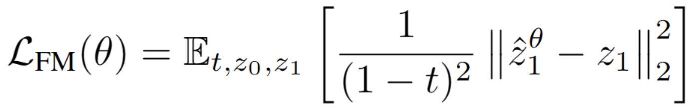
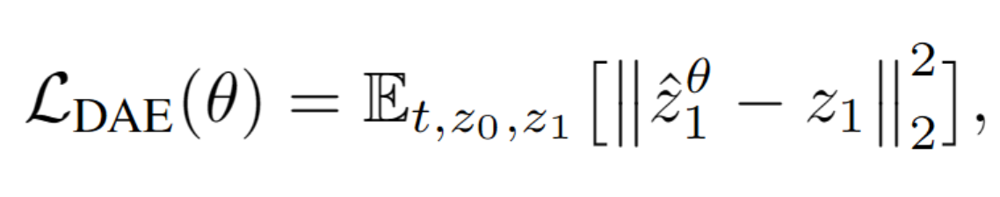
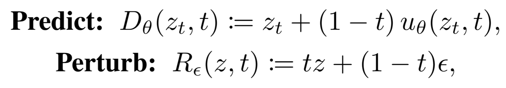
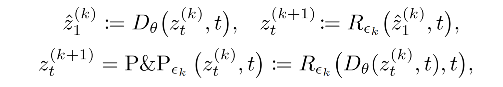
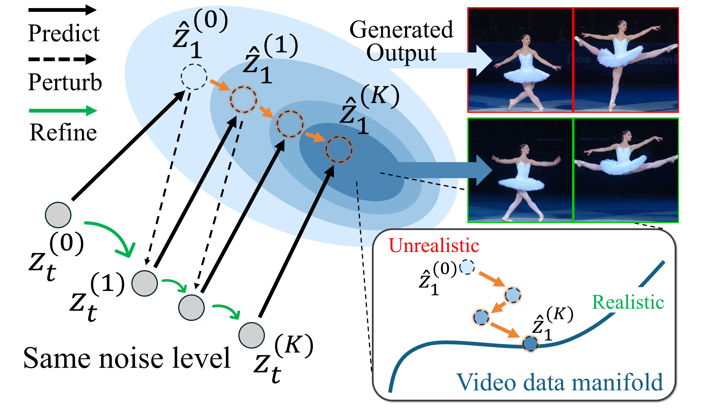
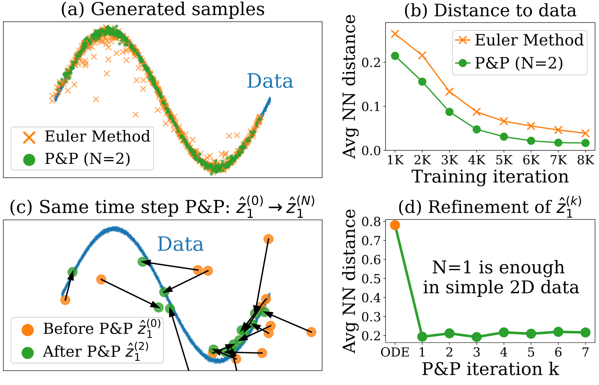
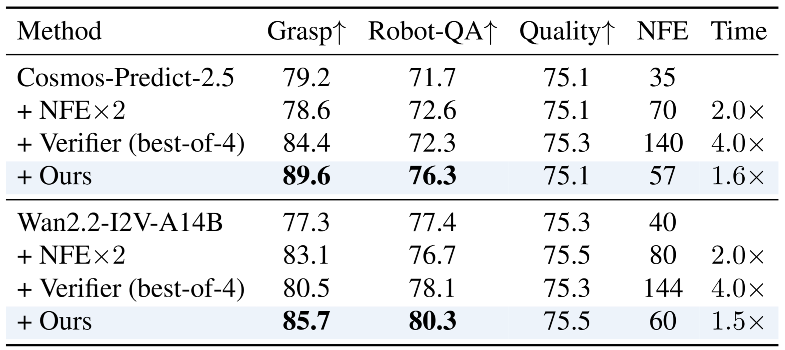

[TL;DR] We present self-refining video sampling method that reuses a pre-trained video generator as a denoising autoencoder to iteratively refine latents.
With ~50% additional NFEs, it improves motion coherence and physical realism without any external verifier, training, or dataset.
Methods
Flow Matching as Denoising Autoencoder
We revisit the connection between diffusion models and denoising autoencoders (DAE) [1-2], and extend this connection to interpret flow matching as a DAE from a training objective perspective.
In particular, up to a time-dependent weighting, the flow-matching loss is equivalent to a standard DAE [3] reconstruction objective.


for which the model learns to denoise the corrupted input $z_t$ back to the clean sample $z_1$.
Thus, flow matching can be viewed as training a time-conditioned DAE.
At inference time, we repurpose the pre-trained model as DAE, self-refiner, iteratively refining samples toward the data manifold.

From a DAE perspective, Predict acts as a denoiser that maps a noisy state $z_t$ toward a clean sample, while Perturb injects noise by interpolating with Gaussian noise at level $t$. Together, they form a simple corrupt–reconstruct loop for DAE-style refinement.

At a fixed noise level $t$, we iteratively apply them to refine $z_t$, an operation we call Predict-and-Perturb (P&P). Repeating this process for a few iterations $k$ gradually steers samples toward higher density regions (i.e., data manifold).

Concept of the self-refining video sampling. Within the same noise level, the video latent $z_t$ is refined as the predicted endpoint $\hat{z}_1$ is pulled toward the data manifold.

Sampling comparison on 2D synthetic dataset.(a-b) P&P generates samples closer to the data manifold compared to the Euler solver. (c-d) When fixing the timestep, iterative P&P pulls the prediction $\hat{z}_1$ closer to the data manifold
In practice, only 2–3 iterations are sufficient to improve temporal coherence and physical plausibility. The refined state $z_t^*:= z^{(K)}_{t}$ is then used as the updated state and passed to the next ODE step, enabling plug-and-play integration with existing solvers by simply replacing $z_t$ with $z_t^*$.
[1] Vincent Pascal, A Connection Between Score Matching and Denoising Autoencoders, Neural computation, 2011
[2] Song & Ermon, Generative Modeling by Estimating Gradients of the Data Distribution, NeurIPS, 2019
[3] Bengio et al., Generalized Denoising Auto-encoders as Generative Models, NeurIPS, 2013
Uncertainty-aware P&P
However, we observe that multiple P&P updates ($K \geq 3$) to videos with classifier-free guidance (CFG) can lead to over-saturation or simplification in static regions such as the background.
To address this, we propose an uncertainty-aware P&P that selectively refines only the locally uncertain regions.
Specifically, we estimate the model confidence using the prediction discrepancy, $\mathbf{U}=\|\hat{z}_1^{(k)}-\hat{z}_1^{(k+1)}\|_1,$ which measures how sensitive the prediction is to the Perturb step.
Here, we apply the P&P update only to regions where the uncertainty $\mathbf{U}$ exceeds a predefined threshold $\tau$.
Notably, it does not require any additional model evaluations (NFE) since both predictions are already computed during the P&P process. Please refer to the paper for more details.
Results
Motion Enhanced Video Generation with Wan2.2-A14B T2V
Wan2.2-A14B already generates human motion reasonably well, but our method can substantially further improve it.
Ours
Base
NFE×2
FlowMo
Ours
Base
NFE×2
FlowMo
Image-to-Video Robotics Video Generation with Cosmos-predict2.5-2B
Our method is also applicable to Image-to-Video generation.
Applied to Cosmos-Predict2.5-2B, it reduces common robotics artifacts such as unstable grasps and implausible interactions, and produces more consistent motion than rejection sampling with Cosmos-Reason1-7B (best-of-4). This may be useful for downstream tasks such as vision-language-action (VLA) models, where even small artifacts can significantly affect perception and action.

PAI-Bench-G evaluation results on robotics I2V generaiton. Grasp and Robot-QA are measure by Gemini 3 Flash.
Cosmos-Predict2.5-2B
Ours
Base
Rejection Sampling (best-of-4)
... A robotic arm enters the frame from the left, lifting the spoon smoothly and deliberately. It moves the spoon across the countertop, placing it down to the right of the pot...
... As the video progresses, the robotic arm descends towards the metallic bowl, gripping it with its claw-like mechanism. It lifts the bowl slightly off the surface, rotates it briefly, and then places it down on the blue cloth at the right side. The robotic arm then retracts, moving back to the initial state. The scene concludes with the metallic bowl now positioned on the blue cloth...
... As the video progresses, the robotic arm on the left lifts the bread off the wicker basket one by one and places them into the toaster. Simultaneously, the robotic arm on the right pushes the toast lever [Failure] ...
Wan2.2-A14B-I2V
Ours
Base
Rejection Sampling (best-of-4)
... The right robotic arm moves towards the shelf, picks up a single rectangular box, and places it in the shopping cart...
... The robotic arm on the right approaches the red-capped bottle, extending its gripper towards it. Gradually, the gripper closes around the bottle, lifting it slightly off the surface. The other robotic arm remains stationary. By the final frame, the robotic arm has successfully lifted the red-capped bottle, holding it securely in its gripper and transferring it to the left robotic arm. The scene concludes with the bottle being placed into the teal bowl [Failure], while the other objects remain in their original positions...
... A robotic arm with black and metallic components is positioned on the left side of the frame, extending towards the paper bag. The robotic arm then moves closer to the bag, extending its claw-like appendages towards it, indicating an intention to interact with the bag, possibly to pick it up or manipulate it. The left robotic arm holds the bag steady, while the right robotic arm places the items into the bag, demonstrating precision and control...
Additional Results
See more results in our paper!
Citation
@article{ki2026avatar,
title={Avatar Forcing: Real-Time Interactive Head Avatar Generation for Natural Conversation},
author={Ki, Taekyung and Jang, Sangwon and Jo, Jaehyeong and Yoon, Jaehong and Hwang, Sung Ju},
journal={arXiv preprint arXiv:2601.00664},
year={2026}
}